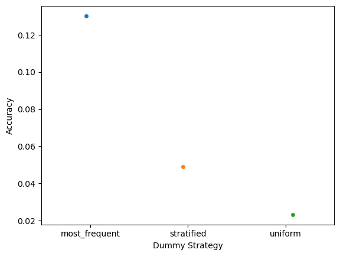
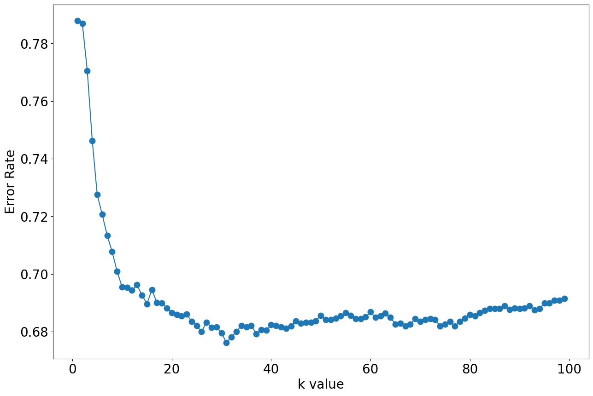

# Changing the read file location to the location of the file
df = pd.read_csv('../data/cleaned-data/Encoded_Features.csv', index_col=0)Classification Modeling
Our objective is to identify the classification model that best predicts the primary cause of failure, c78, with respect to several evaluation metrics.
The final performance for each model is given below.
Dummy Classifier
Precision Macro: 0.0027+0.0000
Recall Macro: 0.0200+0.0000
F1 Macro: 0.0047+0.0000
F1 Micro: 0.1326+0.0000
Naive Bayes
Precision Macro: 0.0027+0.0000
Recall Macro: 0.0200+0.0000
F1 Macro: 0.0047+0.0000
F1 Micro: 0.1326+0.0000
K-Nearest Neighbor
Precision Macro: 0.2356+0.0423
Recall Macro: 0.1337+0.0067
F1 Macro: 0.1306+0.0092
F1 Micro: 0.3153+0.0098
Decision Tree
Precision Macro: 0.3611+0.0058
Recall Macro: 0.3611+0.0058
F1 Macro: 0.1230+0.0067
F1 Micro: 0.3611+0.0058
SVM
Precision Macro: 0.0453+0.0150
Recall Macro: 0.0212+0.0021
F1 Macro: 0.0181+0.0029
F1 Micro: 0.1487+0.0041
Notes - I am unsure why the Dummy Classifier deviated from Lindsey’s results and is equal to the Naive Bayes. I re-ran Lindsey’s notebooks though and got these same values so possibly she completed the Dummy Classifier prior to finalizing Encoding_Feature.csv - The Decison Tree and SVM scores are from an earlier run where I intentionally used a subset of the features and both still took a while to train. I will attempt to fit them again with all the features but it might prove infeasible.
Dummy Classifier
First, we will fit a dummy model to act as a baseline.
df.shape[0]21264# Separating the dependent and independent variable
y = df['c78'] #labels
X = df.drop('c78', axis=1) #features
# Splitting the data into training and testing data
X_train, X_test, y_train, y_test = train_test_split(
X, y, test_size = 0.2)strategies = ['most_frequent', 'stratified', 'uniform']
test_scores = []
for s in strategies:
if s =='constant':
dclf = DummyClassifier(strategy = s, random_state = 0, constant ='M')
else:
dclf = DummyClassifier(strategy = s, random_state = 0)
dclf.fit(X_train, y_train)
y_pred = dclf.predict(X_test)
score = dclf.score(X_test, y_test)
test_scores.append(score)
#print(confusion_matrix(y_test, y_pred))
#print(classification_report(y_test, y_pred))
dclf = DummyClassifier(strategy = 'most_frequent', random_state = 0)
scoring = ['precision_macro', 'recall_macro', 'f1_macro','f1_micro','accuracy']
scores_dclf = cross_validate(dclf, X, y,cv=10, scoring=scoring)
sorted(scores_dclf.keys())
print("%0.4f+%0.4f" % (scores_dclf['test_precision_macro'].mean(), scores_dclf['test_precision_macro'].std()))
print("%0.4f+%0.4f" % (scores_dclf['test_recall_macro'].mean(), scores_dclf['test_recall_macro'].std()))
print("%0.4f+%0.4f" % (scores_dclf['test_f1_macro'].mean(), scores_dclf['test_f1_macro'].std()))
print("%0.4f+%0.4f" % (scores_dclf['test_f1_micro'].mean(), scores_dclf['test_f1_micro'].std()))0.0027+0.0000
0.0200+0.0000
0.0047+0.0000
0.1326+0.0000ax = sns.stripplot(strategies, test_scores);
ax.set(xlabel ='Dummy Strategy', ylabel ='Accuracy')[Text(0.5, 0, 'Dummy Strategy'), Text(0, 0.5, 'Accuracy')]
Naive Bayes
Next, we will try a Naive Bayes model.
# Read dataset to pandas dataframe
irisdata = pd.read_csv('../data/cleaned-data/Encoded_Features.csv', index_col=0)X = irisdata.drop('c78', axis=1)
y = irisdata['c78']X_train, X_test, y_train, y_test = train_test_split(X, y, test_size = 0.2)from sklearn.model_selection import GridSearchCV
Naive = naive_bayes.MultinomialNB()
param_grid = {'alpha': [100000, 500000, 1000000]}
#use gridsearch to test all values for n_neighbors
nb_gscv = GridSearchCV(Naive, param_grid, cv=10, verbose=2)
#fit model to data
nb_gscv.fit(X, y)nb_gscv.best_params_{'alpha': 100000}Naive = naive_bayes.MultinomialNB(alpha=1000000)
Naive.fit(X_train,y_train)# predict the labels on validation dataset
predictions_NB = Naive.predict(X_test)# Use accuracy_score function to get the accuracyscoring = ['precision_macro', 'recall_macro', 'f1_macro','f1_micro','accuracy']
scores_nb = cross_validate(Naive, X, y, cv=10, scoring = scoring, verbose=2)sorted(scores_nb.keys())
scores_nb{'fit_time': array([29.40935636, 29.29487848, 29.02299118, 29.67805696, 30.41820049,
27.21647263, 28.4566586 , 28.28060436, 27.96033669, 27.95482945]),
'score_time': array([0.12052965, 0.11404657, 0.1136179 , 0.11438704, 0.11736965,
0.11576581, 0.11674356, 0.11988378, 0.11960602, 0.11597013]),
'test_precision_macro': array([0.00265162, 0.00265162, 0.00265162, 0.00265162, 0.00265287,
0.00265287, 0.00265287, 0.00265287, 0.00265287, 0.00265287]),
'test_recall_macro': array([0.02, 0.02, 0.02, 0.02, 0.02, 0.02, 0.02, 0.02, 0.02, 0.02]),
'test_f1_macro': array([0.00468244, 0.00468244, 0.00468244, 0.00468244, 0.00468439,
0.00468439, 0.00468439, 0.00468439, 0.00468439, 0.00468439]),
'test_f1_micro': array([0.1325811 , 0.1325811 , 0.1325811 , 0.1325811 , 0.13264346,
0.13264346, 0.13264346, 0.13264346, 0.13264346, 0.13264346]),
'test_accuracy': array([0.1325811 , 0.1325811 , 0.1325811 , 0.1325811 , 0.13264346,
0.13264346, 0.13264346, 0.13264346, 0.13264346, 0.13264346])}print("%0.4f+%0.4f" % (scores_nb['test_precision_macro'].mean(), scores_nb['test_precision_macro'].std()))
print("%0.4f+%0.4f" % (scores_nb['test_recall_macro'].mean(), scores_nb['test_recall_macro'].std()))
print("%0.4f+%0.4f" % (scores_nb['test_f1_macro'].mean(), scores_nb['test_f1_macro'].std()))
print("%0.4f+%0.4f" % (scores_nb['test_f1_micro'].mean(), scores_nb['test_f1_micro'].std()))0.0027+0.0000
0.0200+0.0000
0.0047+0.0000
0.1326+0.0000K - Nearest Neighhbor
data = pd.read_csv('../data/cleaned-data/Encoded_Features.csv',index_col=0)
data.head()
X = data.drop('c78', axis=1)
y = data['c78']
X_train, X_test, y_train, y_test = train_test_split(
X, y, test_size = 0.2)from sklearn.neighbors import KNeighborsClassifier
knn = KNeighborsClassifier(n_neighbors = 10)
knn.fit(X_train,y_train)
y_pred = knn.predict(X_test)
knn.score(X_test,y_test)0.29579120620738303from sklearn.model_selection import cross_val_score
import numpy as np
#create a new KNN model
knn_cv = KNeighborsClassifier(n_neighbors=3)
#train model with cv of 10
cv_scores = cross_val_score(knn_cv, X, y, cv=10)
#print each cv score (accuracy) and average them
print(cv_scores)
print('cv_scores mean:{}'.format(np.mean(cv_scores)))[0.23883404 0.22708039 0.24494593 0.23601316 0.23941675 0.23800564
0.23565381 0.23330198 0.22483537 0.23377234]
cv_scores mean:0.2351859419787961from sklearn.model_selection import GridSearchCV
#create new a knn model
knn2 = KNeighborsClassifier()
#create a dictionary of all values we want to test for n_neighbors
param_grid = {'n_neighbors': np.arange(1, 100)}
#use gridsearch to test all values for n_neighbors
knn_gscv = GridSearchCV(knn2, param_grid, cv=10, verbose=10)
#fit model to data
knn_gscv.fit(X, y)knn_gscv.best_params_
#knn_gscv.best_score_{'n_neighbors': 45}from sklearn.model_selection import cross_validate
from sklearn.metrics import recall_score
import numpy as np
#create a new KNN model
knn_cv = KNeighborsClassifier(n_neighbors=45)
#train model with cv of 10scoring = ['precision_macro', 'recall_macro', 'f1_macro','f1_micro','accuracy']
scores_knn = cross_validate(knn_cv, X, y, cv=10, scoring = scoring)
#print each cv score (accuracy) and average them
sorted(scores_knn.keys())
scores_knn{'fit_time': array([0.85636282, 0.49874997, 0.5051713 , 0.48534489, 0.4949882 ,
0.49622059, 0.49663901, 0.48606586, 0.49530411, 0.47655201]),
'score_time': array([1.98693371, 2.40405393, 2.93795228, 2.62931323, 2.09334898,
2.16602802, 2.09480214, 2.35734534, 2.1879952 , 2.37793231]),
'test_precision_macro': array([0.19997276, 0.31106627, 0.26910541, 0.21671609, 0.20075895,
0.26377379, 0.15877166, 0.26623614, 0.25203867, 0.21710113]),
'test_recall_macro': array([0.12133596, 0.1473856 , 0.13502954, 0.13275619, 0.13448904,
0.12994185, 0.12763656, 0.14093678, 0.13240046, 0.13547305]),
'test_f1_macro': array([0.11585435, 0.15030466, 0.13415572, 0.12612722, 0.13056661,
0.12777295, 0.12000804, 0.13946819, 0.12962251, 0.13253774]),
'test_f1_micro': array([0.29384109, 0.32769158, 0.32346027, 0.31076634, 0.31608655,
0.31984948, 0.31420508, 0.31420508, 0.30573848, 0.32690499]),
'test_accuracy': array([0.29384109, 0.32769158, 0.32346027, 0.31076634, 0.31608655,
0.31984948, 0.31420508, 0.31420508, 0.30573848, 0.32690499])}print("%0.4f+%0.4f" % (scores_knn['test_accuracy'].mean(), scores_knn['test_accuracy'].std()))
print("%0.4f+%0.4f" % (scores_knn['test_precision_macro'].mean(), scores_knn['test_precision_macro'].std()))
print("%0.4f+%0.4f" % (scores_knn['test_recall_macro'].mean(), scores_knn['test_recall_macro'].std()))
print("%0.4f+%0.4f" % (scores_knn['test_f1_macro'].mean(), scores_knn['test_f1_macro'].std()))
print("%0.4f+%0.4f" % (scores_knn['test_f1_micro'].mean(), scores_knn['test_f1_micro'].std()))0.3153+0.0098
0.2356+0.0423
0.1337+0.0067
0.1306+0.0092
0.3153+0.0098import matplotlib.pyplot as plt
error_rate = []
from sklearn.neighbors import KNeighborsClassifier
for i in range(1,100):
knn = KNeighborsClassifier(n_neighbors=i)
knn.fit(X_train, y_train)
pred = knn.predict(X_test)
error_rate.append(np.mean(pred != y_test))#Best -> k = 31 -> err_rate = 0.6762285445567835
error_rate.index(min(error_rate))
error_rate[30]0.6762285445567835fig = plt.figure(figsize=(15,10))
plt.rcParams.update({'font.size': 20})
plt.xlabel("k value")
plt.ylabel("Error Rate")
plt.plot(range(1,100),error_rate, marker='o', markersize=9)
Decision Tree
import numpy as np
import pandas as pd
import matplotlib.pyplot as plt
from sklearn import tree
from sklearn.tree import DecisionTreeClassifierdataset = pd.read_csv('../data/cleaned-data/Encoded_Features.csv',index_col=0)
dataset| c144 | c23 | c24 | c25 | c27 | c13 | c102 | c106 | c41 | c49 | c50 | c52 | c53 | c56 | c59 | c78 | c80 | c96 | c109 | |
|---|---|---|---|---|---|---|---|---|---|---|---|---|---|---|---|---|---|---|---|
| 0 | 10 | 127 | 705 | 145 | 24 | 19 | 0 | 1 | 1 | 4 | 7 | 1 | 5 | 230 | 21 | 32 | 30 | 31 | 1 |
| 1 | 10 | 264 | 1763 | 607 | 19 | 54 | 0 | 1 | 3 | 4 | 41 | 6 | 135 | 2882 | 12 | 94 | 33 | 21 | 1 |
| 2 | 10 | 315 | 934 | 241 | 9 | 0 | 0 | 1 | 1 | 4 | 11 | 12 | 145 | 335 | 0 | 103 | 8 | 40 | 1 |
| 3 | 10 | 264 | 1752 | 606 | 5 | 0 | 0 | 0 | 3 | 2 | 31 | 9 | 1256 | 3044 | 0 | 40 | 30 | 7 | 1 |
| 4 | 16 | 128 | 920 | 167 | 4 | 81 | 0 | 1 | 5 | 2 | 25 | 12 | 490 | 3439 | 19 | 4 | 30 | 21 | 1 |
| ... | ... | ... | ... | ... | ... | ... | ... | ... | ... | ... | ... | ... | ... | ... | ... | ... | ... | ... | ... |
| 22784 | 15 | 23 | 1488 | 483 | 9 | 10 | 0 | 2 | 1 | 8 | 44 | 13 | 0 | 691 | 12 | 54 | 30 | 30 | 1 |
| 22785 | 15 | 264 | 1840 | 619 | 5 | 10 | 3 | 2 | 3 | 8 | 32 | 13 | 200 | 496 | 12 | 54 | 30 | 30 | 3 |
| 22786 | 7 | 207 | 255 | 75 | 29 | 10 | 4 | 1 | 8 | 8 | 24 | 9 | 1360 | 2211 | 12 | 40 | 30 | 19 | 1 |
| 22787 | 10 | 148 | 69 | 34 | 4 | 50 | 0 | 1 | 1 | 8 | 14 | 13 | 145 | 190 | 7 | 75 | 12 | 16 | 1 |
| 22788 | 15 | 264 | 1794 | 612 | 23 | 47 | 3 | 2 | 3 | 8 | 29 | 13 | 871 | 3484 | 55 | 32 | 4 | 31 | 1 |
22789 rows × 19 columns
from sklearn.model_selection import train_test_split
X = dataset.copy().drop(columns=['c78'])
y = dataset['c78']
X_train, X_test, y_train, y_test = train_test_split(X, y, test_size=0.20)targets = dataset['c78'].unique().tolist()
targets = [str(x) for x in targets]from sklearn.tree import DecisionTreeClassifier
from sklearn.model_selection import GridSearchCV
dTree = DecisionTreeClassifier()
#create a dictionary of all values we want to test for n_neighbors
param_grid = {'max_depth': np.arange(1, 100)}
#use gridsearch to test all values for n_neighbors
dTree_gscv = GridSearchCV(dTree, param_grid, cv=10, verbose=2)
#fit model to data
dTree_gscv.fit(X, y)dTree_gscv.best_params_{'max_depth': 10}from sklearn.model_selection import cross_validate
from sklearn.metrics import recall_score
from sklearn.metrics import accuracy_score
import numpy as np
#create a new KNN model
dTree = DecisionTreeClassifier(max_depth = 10)#train model with cv of 10
scoring = ['precision_macro', 'recall_acro', 'f1_macro','f1_micro','accuracy']
scores_dt = cross_validate(dTree, X, y, cv=10, scoring = scoring)
#print each cv score (accuracy) and average them
sorted(scores_dt.keys())
print("%0.4f+%0.4f" % (scores_dt['test_precision_macro'].mean(), scores_dt['test_precision_macro'].std()))
print("%0.4f+%0.4f" % (scores_dt['test_recall_macro'].mean(), scores_dt['test_recall_macro'].std()))
print("%0.4f+%0.4f" % (scores_dt['test_f1_macro'].mean(), scores_dt['test_f1_macro'].std()))
print("%0.4f+%0.4f" % (scores_dt['test_f1_micro'].mean(), scores_dt['test_f1_micro'].std()))0.3611+0.0058
0.3611+0.0058
0.1230+0.0067
0.3611+0.0058SVM
import numpy as np
import pandas as pd
from sklearn.model_selection import train_test_split
from sklearn.model_selection import cross_validate
from sklearn import datasets
from sklearn.svm import SVC# Assign colum names to the dataset
colnames = ['c144','c23','c24','c25','c27','c13','c102','c106','c41','c49', 'c50', 'c52', 'c80', 'c96', 'c109','c78']
# Read dataset to pandas dataframe
irisdata = pd.read_csv('../data/cleaned-data/Encoded_Features.csv',usecols=colnames)X = irisdata.drop('c78', axis=1)
y = irisdata['c78']X_train, X_test, y_train, y_test = train_test_split(X, y, test_size = 0.2)clf = SVC(kernel = 'poly', degree = 8)
#clf.fit(X_train, y_train)
scoring = ['precision_macro', 'recall_macro', 'f1_macro','f1_micro','accuracy']
scores_res = cross_validate(clf, X, y, cv=10, scoring = scoring)from sklearn.model_selection import GridSearchCV
clf = SVC(kernel = 'poly', degree = 2)
param_grid = {'degree': [2, 4, 10]}
#use gridsearch to test all values for n_neighbors
svm_gscv = GridSearchCV(clf, param_grid, cv=2)
#fit model to data
svm_gscv.fit(X, y)sorted(scores_res.keys())
scores_res{'fit_time': array([1889.22326255, 3645.23735523, 1848.76933146, 1988.86997342,
1838.83641362, 1711.68622732, 1769.97253346, 1729.35280895,
1772.21598983, 1696.40208578]),
'score_time': array([11.10421562, 47.5643127 , 11.43277121, 12.20550013, 12.46886802,
12.16364694, 11.61115575, 11.66941142, 11.45319939, 12.55381179]),
'test_precision_macro': array([0.03526325, 0.04824987, 0.08318548, 0.04999466, 0.05392378,
0.03490309, 0.03320958, 0.04777263, 0.03851724, 0.02794099]),
'test_recall_macro': array([0.02224964, 0.02135871, 0.02413596, 0.0240558 , 0.01957375,
0.01787839, 0.01932417, 0.01948561, 0.0238185 , 0.02029652]),
'test_f1_macro': array([0.01864003, 0.0190541 , 0.0225871 , 0.02192672, 0.01617443,
0.01367981, 0.01549697, 0.01593496, 0.02125461, 0.0162016 ]),
'test_f1_micro': array([0.14918824, 0.14962703, 0.15313734, 0.15577007, 0.14655551,
0.14216762, 0.14787187, 0.15050461, 0.15006582, 0.14223003]),
'test_accuracy': array([0.14918824, 0.14962703, 0.15313734, 0.15577007, 0.14655551,
0.14216762, 0.14787187, 0.15050461, 0.15006582, 0.14223003])}print("%0.4f+%0.4f" % (scores_res['test_accuracy'].mean(), scores_res['test_accuracy'].std()))
print("%0.4f+%0.4f" % (scores_res['test_precision_macro'].mean(), scores_res['test_precision_macro'].std()))
print("%0.4f+%0.4f" % (scores_res['test_recall_macro'].mean(), scores_res['test_recall_macro'].std()))
print("%0.4f+%0.4f" % (scores_res['test_f1_macro'].mean(), scores_res['test_f1_macro'].std()))
print("%0.4f+%0.4f" % (scores_res['test_f1_micro'].mean(), scores_res['test_f1_micro'].std()))0.1487+0.0041
0.0453+0.0150
0.0212+0.0021
0.0181+0.0029
0.1487+0.0041from sklearn.metrics import classification_report, confusion_matrix
print(confusion_matrix(y_test, y_pred))
print(classification_report(y_test, y_pred))